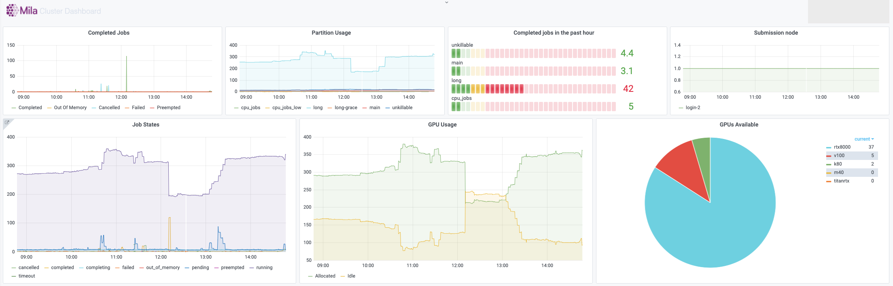

Computing infrastructure and policies
This section seeks to provide factual information and policies on the Mila cluster computing environments.
Overview of available computing resources at Mila
The Mila cluster is to be used for regular development and relatively small number of jobs (< 5). It is a heterogeneous cluster. It uses SLURM to schedule jobs.
Mila cluster versus Digital Research Alliance of Canada clusters
There are a lot of commonalities between the Mila cluster and the clusters from Digital Research Alliance of Canada (the Alliance). At the time being, the Alliance clusters where we have a large allocation of resources are beluga, cedar, graham and narval. We also have comparable computational resources in the Mila cluster, with more to come.
The main distinguishing factor is that we have more control over our own cluster than we have over the ones at the Alliance. Notably, also, the compute nodes in the Mila cluster all have unrestricted access to the Internet, which is not the case in general for the Alliance clusters (although cedar does allow it).
At the current time of this writing (June 2021), Mila students are advised to use a healthy diet of a mix of Mila and Alliance clusters. This is especially true in times when your favorite cluster is oversubscribed, because you can easily switch over to a different one if you are used to it.
Guarantees about one GPU as absolute minimum
There are certain guarantees that the Mila cluster tries to honor when it comes to giving at minimum one GPU per student, all the time, to be used in interactive mode. This is strictly better than “one GPU per student on average” because it’s a floor meaning that, at any time, you should be able to ask for your GPU, right now, and get it (although it might take a minute for the request to be processed by SLURM).
Interactive sessions are possible on the Alliance clusters, and there are generally special rules that allow you to get resources more easily if you request them for a very short duration (for testing code before queueing long jobs). You do not get the same guarantee as on the Mila cluster, however.
Node profile description
Name |
GPU |
CPUs |
Sockets |
Cores/Socket |
Threads/Core |
Memory (GB) |
TmpDisk (TB) |
Arch |
Slurm Features |
||
|---|---|---|---|---|---|---|---|---|---|---|---|
Model |
Mem |
# |
GPU Arch and Memory |
||||||||
|
|||||||||||
cn-a[001-011] |
RTX8000 |
48 |
8 |
40 |
2 |
20 |
1 |
384 |
3.6 |
x86_64 |
turing,48gb |
cn-b[001-005] |
V100 |
32 |
8 |
40 |
2 |
20 |
1 |
384 |
3.6 |
x86_64 |
volta,nvlink,32gb |
cn-c[001-040] |
RTX8000 |
48 |
8 |
64 |
2 |
32 |
1 |
384 |
3 |
x86_64 |
turing,48gb |
cn-g[001-026] |
A100 |
80 |
4 |
64 |
2 |
32 |
1 |
1024 |
7 |
x86_64 |
ampere,nvlink,80gb |
|
|||||||||||
cn-d[001-002] |
A100 |
40 |
8 |
128 |
2 |
64 |
1 |
1024 |
14 |
x86_64 |
ampere,nvlink,40gb |
cn-d[003-004] |
A100 |
80 |
8 |
128 |
2 |
64 |
1 |
2048 |
28 |
x86_64 |
ampere,nvlink,80gb |
cn-e[002-003] |
V100 |
32 |
8 |
40 |
2 |
20 |
1 |
512 |
7 |
x86_64 |
volta,32gb |
|
|||||||||||
cn-f[001-004] |
32 |
1 |
32 |
1 |
256 |
10 |
x86_64 |
rome |
|||
cn-h[001-004] |
64 |
2 |
32 |
1 |
768 |
7 |
x86_64 |
milan |
|||
|
|||||||||||
kepler5 |
V100 |
16 |
2 |
16 |
2 |
4 |
2 |
256 |
3.6 |
x86_64 |
volta,16gb |
|
|||||||||||
rtx[1,3-5,7] |
titanrtx |
24 |
2 |
20 |
1 |
10 |
2 |
128 |
0.93 |
x86_64 |
turing,24gb |
Special nodes and outliers
DGX A100
DGX A100 nodes are NVIDIA appliances with 8 NVIDIA A100 Tensor Core GPUs. Each GPU has 40 GB of memory, for a total of 320 GB per appliance. The GPUs are interconnected via 6 NVSwitches which allows 4.8 TB/s bi-directional bandwidth.
In order to run jobs on a DGX A100, add the flags below to your Slurm commands:
--gres=gpu:a100:<number> --reservation=DGXA100
MIG
MIG (Multi-Instance GPU) is an NVIDIA technology allowing certain GPUs to be partitioned into multiple instances, each of which has a roughly proportional amount of compute resources, device memory and bandwidth to that memory.
NVIDIA supports MIG on its A100 GPUs and allows slicing the A100 into up to 7 instances. Although this can theoretically be done dynamically, the SLURM job scheduler does not support doing so in practice as it does not model reconfigurable resources very well. Therefore, the A100s must currently be statically partitioned into the required number of instances of every size expected to be used.
The cn-g series of nodes include A100-80GB GPUs. One third have been
configured to offer regular (non-MIG mode) a100l GPUs. The other two-thirds
have been configured in MIG mode, and offer the following profiles:
Name |
GPU |
Cluster-wide |
||
|---|---|---|---|---|
Model |
Memory |
Compute |
# |
|
|
A100 |
10GB (1/8th) |
1/7th of full |
72 |
|
A100 |
20GB (2/8th) |
2/7th of full |
108 |
|
A100 |
40GB (4/8th) |
3/7th of full |
72 |
And can be requested using a SLURM flag such as --gres=gpu:a100l.1
The partitioning may be revised as needs and SLURM capabilities evolve. Other MIG profiles exist and could be introduced.
Warning
MIG has a number of important limitations,
most notably that a GPU in MIG mode does not support graphics APIs
(OpenGL/Vulkan), nor P2P over NVLink and PCIe. We have therefore chosen to
limit every MIG job to exactly one MIG slice and no more. Thus,
--gres=gpu:a100l.3 will work (and request a size-3 slice of an
a100l GPU) but --gres=gpu:a100l.1:3 (with :3 requesting
three size-1 slices) will not.
AMD
Warning
As of August 20 2019 the GPUs had to return back to AMD. Mila will get more samples. You can join the amd slack channels to get the latest information
Mila has a few node equipped with MI50 GPUs.
srun --gres=gpu -c 8 --reservation=AMD --pty bash
first time setup of AMD stack
conda create -n rocm python=3.6
conda activate rocm
pip install tensorflow-rocm
pip install /wheels/pytorch/torch-1.1.0a0+d8b9d32-cp36-cp36m-linux_x86_64.whl
Data sharing policies
Note
/network/scratch aims to support Access Control Lists (ACLs) to allow collaborative work on rapidly changing data, e.g. work in process datasets, model checkpoints, etc…
/network/projects aims to offer a collaborative space for long-term projects. Data that should be kept for a longer period then 90 days can be stored in that location but first a request to Mila’s helpdesk has to be made to create the project directory.
Monitoring
Every compute node on the Mila cluster has a Netdata monitoring daemon allowing you to get a sense of the state of the node. This information is exposed in two ways:
For every node, there is a web interface from Netdata itself at
<node>.server.mila.quebec:19999. This is accessible only when using the Mila wifi or through SSH tunnelling.SSH tunnelling: on your local machine, run
ssh -L 19999:<node>.server.mila.quebec:19999 -p 2222 login.server.mila.quebecor
ssh -L 19999:<node>.server.mila.quebec:19999 milaif you have already setup your SSH Login,
then open http://localhost:19999 in your browser.
The Mila dashboard at dashboard.server.mila.quebec exposes aggregated statistics with the use of grafana. These are collected internally to an instance of prometheus.
In both cases, those graphs are not editable by individual users, but they provide valuable insight into the state of the whole cluster or the individual nodes. One of the important uses is to collect data about the health of the Mila cluster and to sound the alarm if outages occur (e.g. if the nodes crash or if GPUs mysteriously become unavailable for SLURM).
Example with Netdata on cn-c001
For example, if we have a job running on cn-c001, we can type
cn-c001.server.mila.quebec:19999 in a browser address bar and the following
page will appear.
Example watching the CPU/RAM/GPU usage
Given that compute nodes are generally shared with other users who are also running jobs at the same time and consuming resources, this is not generally a good way to profile your code in fine details. However, it can still be a very useful source of information for getting an idea of whether the machine that you requested is being used in its full capacity.
Given how expensive the GPUs are, it generally makes sense to try to make sure that this resources is always kept busy.
- CPU
iowait (pink line): High values means your model is waiting on IO a lot (disk or network).
- CPU RAM
You can see how much CPU RAM is being used by your script in practice, considering the amount that you requested (e.g.
`sbatch --mem=8G ...`).GPU usage is generally more important to monitor than CPU RAM. You should not cut it so close to the limit that your experiments randomly fail because they run out of RAM. However, you should not request blindly 32GB of RAM when you actually require only 8GB.
- GPU
Monitors the GPU usage using an nvidia-smi plugin for Netdata.
Under the plugin interface, select the GPU number which was allocated to you. You can figure this out by running
echo $SLURM_JOB_GPUSon the allocated node or, if you have the job ID,scontrol show -d job YOUR_JOB_ID | grep 'GRES'and checkingIDXYou should make sure you use the GPUs to their fullest capacity.
Select the biggest batch size if possible to increase GPU memory usage and the GPU computational load.
Spawn multiple experiments if you can fit many on a single GPU. Running 10 independent MNIST experiments on a single GPU will probably take less than 10x the time to run a single one. This assumes that you have more experiments to run, because nothing is gained by gratuitously running experiments.
You can request a less powerful GPU and leave the more powerful GPUs to other researchers who have experiments that can make best use of them. Sometimes you really just need a k80 and not a v100.
- Other users or jobs
If the node seems unresponsive or slow, it may be useful to check what other tasks are running at the same time on that node. This should not be an issue in general, but in practice it is useful to be able to inspect this to diagnose certain problems.
Example with Mila dashboard
Storage
Path |
Performance |
Usage |
Quota (Space/Files) |
Backup |
Auto-cleanup |
|---|---|---|---|---|---|
|
High |
|
|||
|
Low |
|
100GB/1000K |
Daily |
no |
|
High |
|
no |
no |
90 days |
|
Highest |
|
4TB/- |
no |
at job end |
|
Fair |
|
200GB/1000K |
Daily |
no |
|
Low |
|
500GB |
no |
no |
Note
The $HOME file system is backed up once a day. For any file
restoration request, file a request to Mila’s IT support with the path to the file or directory to
restore, with the required date.
Warning
Currently there is no backup system for any other file systems of the Mila cluster. Storage local to personal computers, Google Drive and other related solutions should be used to backup important data
$HOME
$HOME is appropriate for codes and libraries which are small and read once,
as well as the experimental results that would be needed at a later time (e.g.
the weights of a network referenced in a paper).
Quotas are enabled on $HOME for both disk capacity (blocks) and number of
files (inodes). The limits for blocks and inodes are respectively 100GiB and 1
million per user. The command to check the quota usage from a login node is:
beegfs-ctl --cfgFile=/etc/beegfs/home.d/beegfs-client.conf --getquota --uid $USER
$SCRATCH
$SCRATCH can be used to store processed datasets, work in progress datasets
or temporary job results. Its block size is optimized for small files which
minimizes the performance hit of working on extracted datasets.
Note
Auto-cleanup: this file system is cleared on a weekly basis, files not used for more than 90 days will be deleted.
$SLURM_TMPDIR
$SLURM_TMPDIR points to the local disk of the node on which a job is
running. It should be used to copy the data on the node at the beginning of the
job and write intermediate checkpoints. This folder is cleared after each job.
projects
projects can be used for collaborative projects. It aims to ease the
sharing of data between users working on a long-term project.
Quotas are enabled on projects for both disk capacity (blocks) and number
of files (inodes). The limits for blocks and inodes are respectively 200GiB and
1 million per user and per group.
Note
It is possible to request higher quota limits if the project requires it. File a request to Mila’s IT support.
$ARCHIVE
$ARCHIVE purpose is to store data other than datasets that has to be kept
long-term (e.g. generated samples, logs, data relevant for paper submission).
$ARCHIVE is only available on the login nodes. Because this file system
is tuned for large files, it is recommended to archive your directories. For
example, to archive the results of an experiment in
$SCRATCH/my_experiment_results/, run the commands below from a login node:
cd $SCRATCH
tar cJf $ARCHIVE/my_experiment_results.tar.xz --xattrs my_experiment_results
Disk capacity quotas are enabled on $ARCHIVE. The soft limit per user is
500GB, the hard limit is 550GB. The grace time is 7 days. This means that one
can use more than 500GB for 7 days before the file system enforces quota.
However, it is not possible to use more than 550GB.
The command to check the quota usage from a login node is df:
df -h $ARCHIVE
Note
There is NO backup of this file system.
datasets
datasets contains curated datasets to the benefit of the Mila community.
To request the addition of a dataset or a preprocessed dataset you think could
benefit the research of others, you can fill this form. Datasets can also be browsed from the
web : Mila Datasets
Datasets in datasets/restricted are restricted and require an explicit
request to gain access. Please submit a support ticket mentioning the dataset’s
access group (ex.: scannet_users), your cluster’s username and the
approbation of the group owner. You can find the dataset’s access group by
listing the content of /network/datasets/restricted with the ls command.
Those datasets are mirrored to the Alliance clusters in
~/projects/rrg-bengioy-ad/data/curated/ if they follow Digital Research
Alliance of Canada’s good practices on data.
To list the local datasets on an Alliance cluster, you can execute the
following command:
ssh [CLUSTER_LOGIN] -C "projects/rrg-bengioy-ad/data/curated/list_datasets_cc.sh"
Data Transmission
Multiple methods can be used to transfer data to/from the cluster: